Всероссийский слёт агроклассов
Образовательная агролаборатория
АгроЛаб — где наука встречается с полем
Центр инноваций, профориентации и научно-практической деятельности в сфере АПК для учеников 5–9 классов, педагогов и родителей.
Узнать большеПрисоединитьсявовлечённость учеников
партнёрств с АПК и образованием
года успешной работы
О лаборатории
Миссия, оборудование, команда, история
Профессиональный, но понятный школьникам подход: реальная наука, понятные форматы и прикладные результаты.
Миссия и цели
Формируем исследовательскую культуру и экологическое мышление для будущего АПК.
Наше оборудование
Микроскопы, датчики, мини-теплицы, наборы анализа и цифровые модули наблюдения.
Команда
Педагоги, методисты и эксперты из агропредприятий и образовательных организаций.
История создания
Проект запущен в 2023 году как лаборатория практической профориентации.
Образовательные программы
Форматы работы
Агрокласс (6–8 кл.)
- Практика по микрозелени
- Лабораторные опыты
Профориентационные модули
- Экскурсии и профпробы
- Встречи с экспертами
Мастер-классы
- Экопрактикумы
- Командные кейсы
Онлайн-курсы
- Для отдалённых школ
- Видео и чек-листы
Проекты и исследования
Текущие, архив, конкурсы
Текущие
- «Инвазивы под микроскопом»
- «Микрозелень в классе»
- «Экопатруль-2025»
Архив
- Микрозелень на субстратах
- Световой режим рассады
- Почвенный дневник школы
Конкурсы
- Агродиктант
- BIO-хакатон
- Школьные экоинициативы
Партнёры
Органы власти, образование, АПК, природоохрана
Горизонтальная карусель партнёров:
НовГУБелгранкормВалдайский аграрный техникумНацпарк «Валдайский»КванториумНовГУБелгранкормВалдайский аграрный техникумНацпарк «Валдайский»Кванториум
Медиа
Фотогалерея, видео и публикации
Добавлены фотографии из папки img.
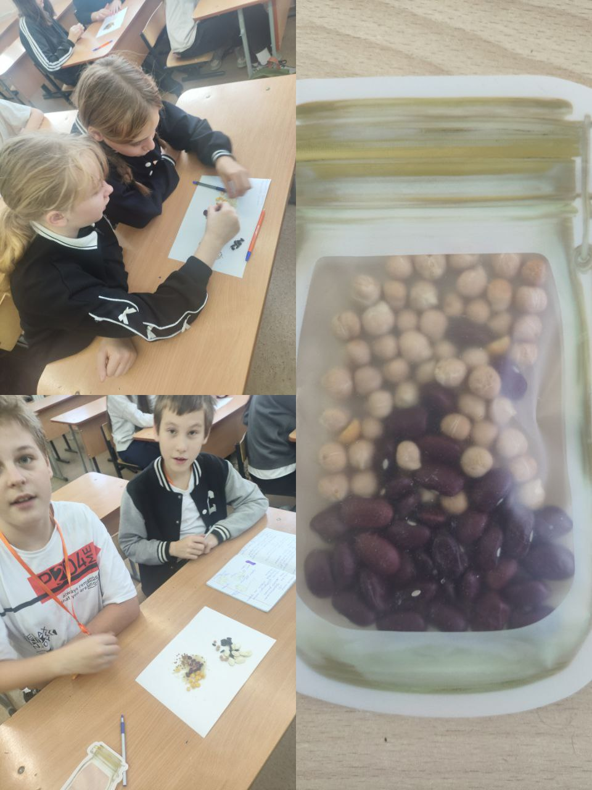
Лабораторный практикум
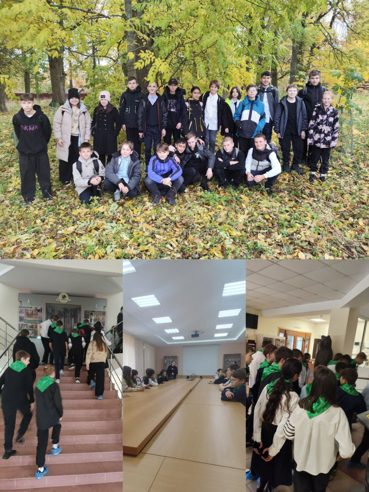
Исследования в классе
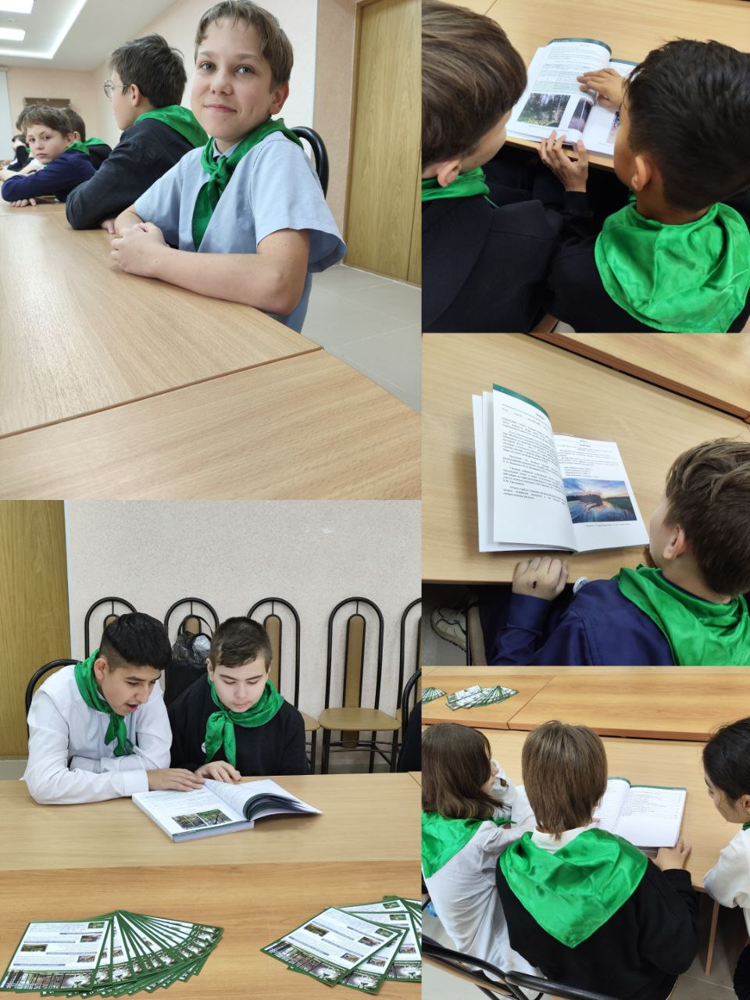
Проектная сессия
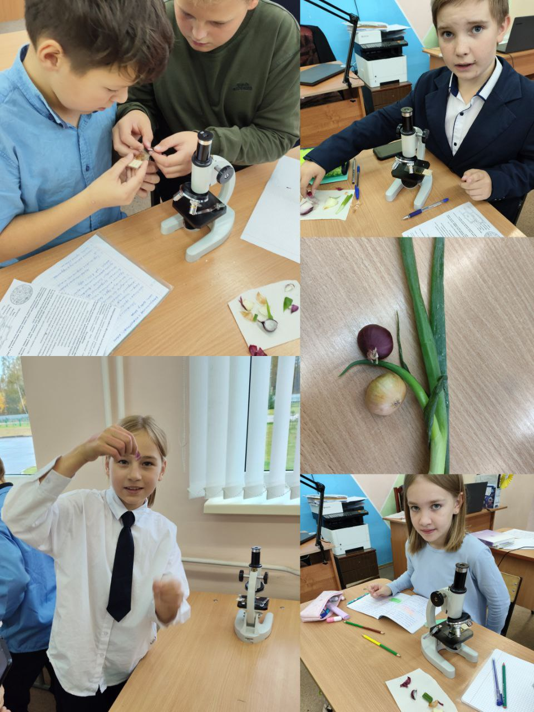
Полевой мониторинг
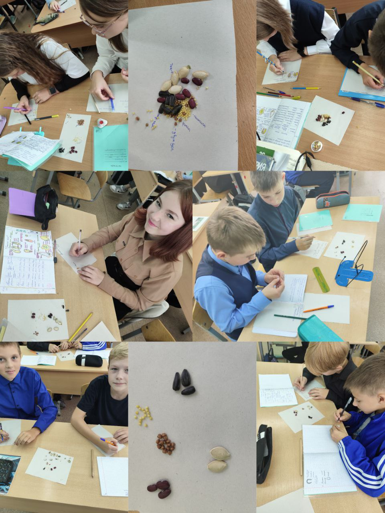
Экологический выезд
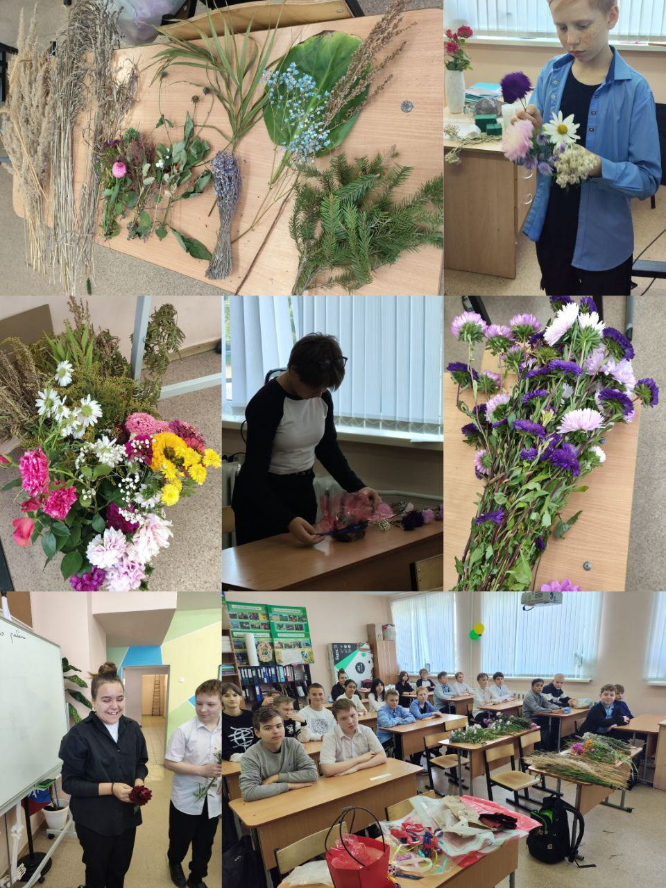
Разбор результатов
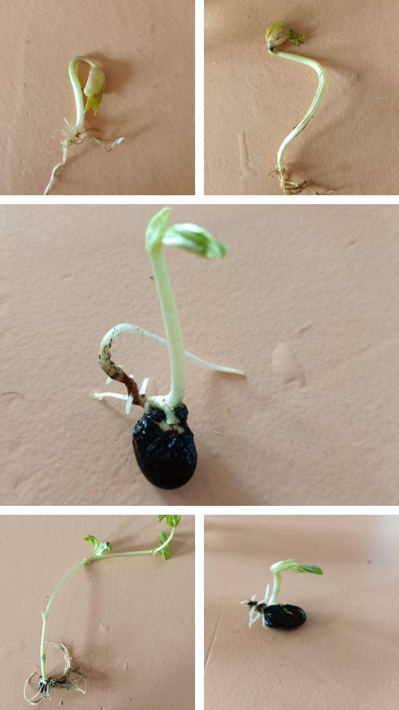
Работа с оборудованием
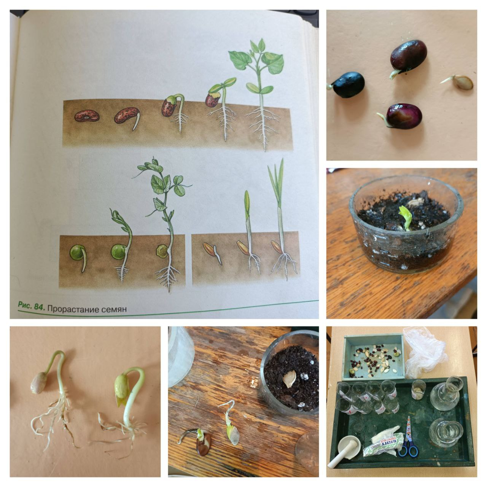
Командное исследование
Видео с занятий и экскурсий
- Сбор данных для школьного проекта
- Практикум по анализу почвы
- Экскурсии к партнёрам
Публикации и СМИ
- Отчёты о сезонных проектах
- Материалы для родителей
- Анонсы конкурсов
Ресурсы
Для педагогов и учеников
Методические материалы
- Сценарии занятий
- Шаблоны отчётов
- Критерии оценки
Интерактивные задания
- Мини-квест «Найди инвазив»
- Чек-листы наблюдений
- Короткие тесты
Угрозы растительному миру
- Инвазивные виды
- Болезни растений
- Профилактика и фотоотчёты
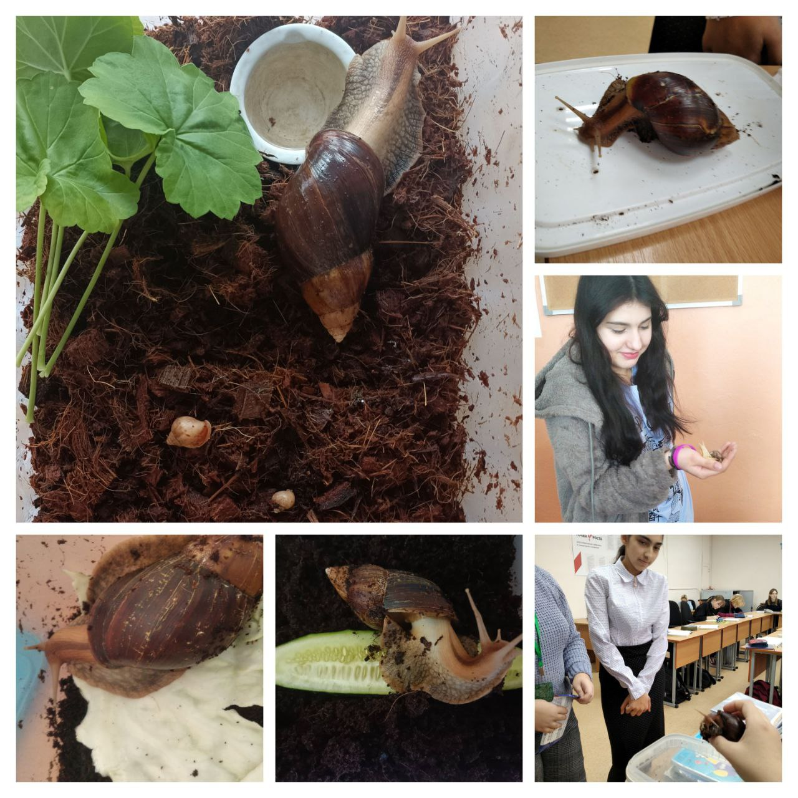
Материалы для занятий
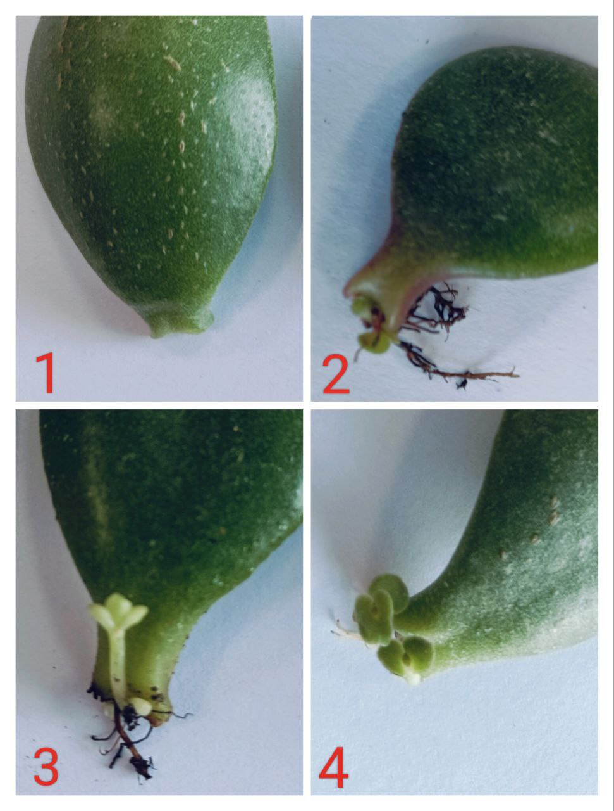
Интерактивное задание
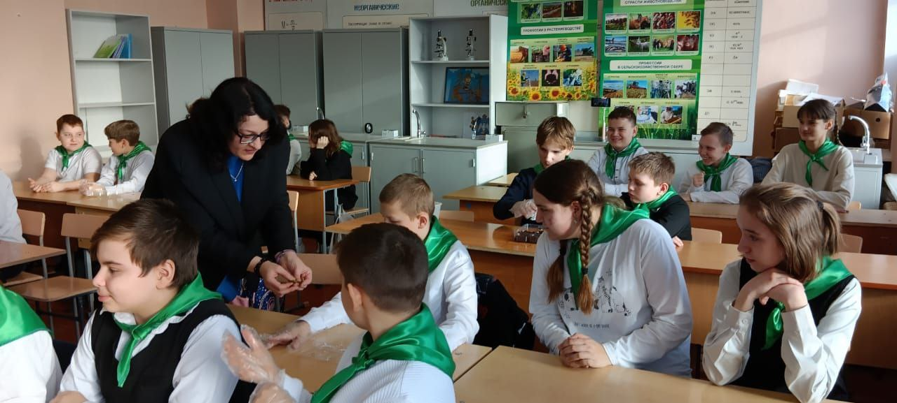
Наблюдение за растениями
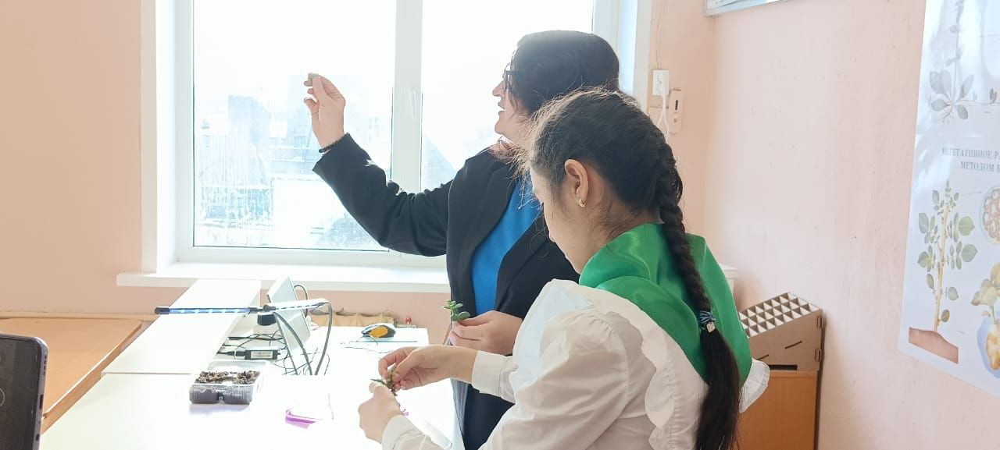
Проектный отчёт
Контакты
Связаться с АгроЛабом
Контакты
МАОУ «СШ №1 им. М. Аверина»Адрес: г. Валдай, ул. Луначарского д. 27Email: averinsch@yandex.ruТелефон: +7 (81666) 2-00-00
Соцсети
Форма обратной связи
Для партнёров и школ
Выездные мастер-классы, дистанционные модули и совместные проекты под ваши задачи.